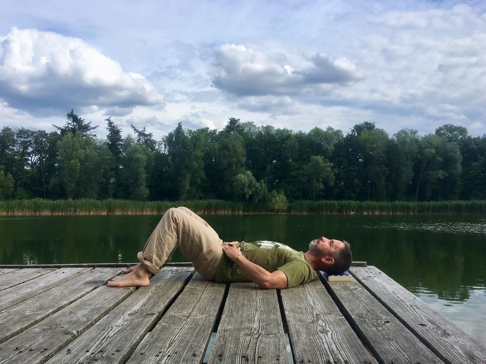

Alexander-Technik
Die Alexander-Technik hat alles verändert. In einer Zeit, in der ich arbeitssüchtig war, hat sie mich das Innehalten gelehrt.

Während meines Musikstudiums hatte ich an einigen Gruppenstunden teilgenommen, die mich neugierig machten, aber es gab zu viele andere aufregende Dinge zu entdecken. Viel später stellte mir meine liebe Freundin und künstlerische Weggefährtin Margaret Cameron Jane Refshauge vor. Sie legte mich für etwa 20 Minuten auf den Tisch, und die Wirkung hallte sechs Monate nach. Trotzdem dauerte es weitere zwei Jahre, bis ich einen Termin vereinbarte. Dann war ich unterwegs.
Fünf Jahre später, nachdem ich meine Stelle gekündigt hatte, besuchte ich die Alexander-Technik-Schule Berlin und schrieb mich sofort in die dreijährige Ausbildung bei Jörg Aßhoff ein. Ich bin im ATVD in Deutschland und im AUSTAT in Australien registriert.
In Berlin, Paleopoli oder Melbourne arbeite ich im Einzelunterricht und stelle für jede Person ein eigenes Programm zusammen, das ihren Weg in der Alexander-Technik begleitet. Von Zeit zu Zeit biete ich Workshops und Retreats an. Wenn dich hier etwas anspricht, melde dich.
Mehr über die Alexander-Technik.

Audio-Serien
Über die Jahre sind mehrere Audio-Serien entstanden, die aus Alexander-Technik, Meditation und Kunst schöpfen: kurze Übungen zum Anhören zu Hause, in deiner eigenen Zeit.

mehr Audio-Serien
Film
Stimmen
Ich verstehe Stille und Bewegung, Ausrichtung und Fluss inzwischen auf neue Weise.
Es hat mich überrascht, dass so einfach erklärbare Prinzipien so viel bewirken und zugleich eine fortlaufende, immer tiefere Erkundung eröffnen können.
Vor allem ist Davids Herangehensweise ganzheitlich und stärkend: Er führt mich behutsam dahin, meine eigenen Ressourcen in mir zu finden.
Ich litt unter extremer arbeitsbedingter Schlaflosigkeit, und nach jeder Stunde schlief ich eine ganze Nacht gut.
Davids Alexander-Arbeit hat mir geholfen, an meinen inneren Zufluchtsort zurückzukehren. Diese Stunden haben mich ermutigt, mich neu auszurichten.

Stunden & Honorare
Melde dich für einen Termin.
Für mehrere und regelmäßige Stunden gibt es Ermäßigungen. Termine können bis 48 Stunden vorher verschoben oder abgesagt werden, danach wird das volle Honorar fällig. Anzahlungen und Vorverkäufe werden nicht erstattet. Wenn Geld ein Hindernis ist, melde dich, dann finden wir eine Lösung. Bequeme, lockere Kleidung wird empfohlen.
Fotografien